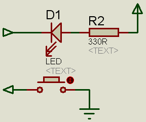

The LEDs And Buttons
The mega8 board has 8 buttons and 8 LEDs. First I'll explain the LEDs. These are connected to Vcc via a current limiting resistor (330R). This results in an active low operation: When the LED's header pin is held low by the micro, the LED is ON. When the pin is high, the LED is off. Here's a schematic of one LED and one button:

The Buttons are just connected to ground and will thus generate a low level when pressed. They are NOT equipped with a pull-up resistor, so the internal pull-ups of the AVR have to be used.
Both headers provide Vcc and Gnd (just as the port headers) and have a decoupling cap (not shown here).